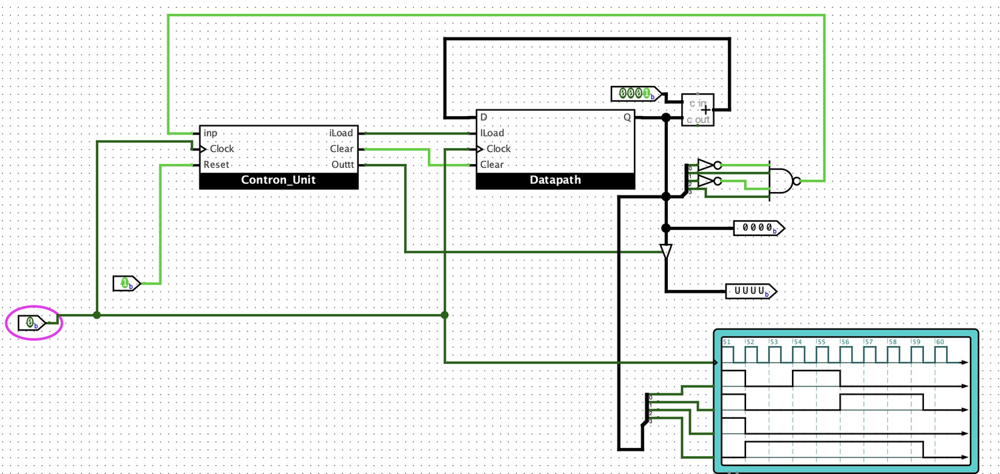

📖 สรุปและรายงานผลการทดลองจริง: 20. AVR Exercise Lab 2 — โปรแกรมภาษาแอสเซมบลี นับเลข 1 ถึง 10 บน PORTB
รายงานผลการปฏิบัติการทดลองฉบับเต็ม พร้อมซอร์สโค้ดภาษา C/Assembly แผนผังวงจร Proteus VSM ตารางผลลัพธ์ และภาพถ่ายหน้าจอดีบักจริง
📖 ถอดสกัดวงจรและแผนผังเวลารายงานผลการทดลองวงจรนับ 1 ถึง 10
การทดลองนี้เป็นการสร้างวงจรนับไบนารีขนาด 4 บิตที่เพิ่มค่าจาก 1 ($0001_2$) ไปถึง 10 ($1010_2$) เมื่อนับถึง 10 วงจร Comparator ตรวจจับจะส่งสัญญาณ Reset ให้กลับไปเริ่มต้นนับ 1 ใหม่ทันที:

รูปที่ 1: ผังวงจรสมบูรณ์แสดงตัวนับ Register, Adder และ Comparator บน Proteus

รูปที่ 2: รูปคลื่นสัญญาณ Chronogram แสดงจังหวะการเปลี่ยนค่า 1 -> 10 และ Reset
📁 เอกสารรายงานผลการทดลองจริง (Student Lab Report Assets)
📑 แผงแสดงรายงานผลการทดลองปฏิบัติตามแบบฟอร์มสถาบัน (Embedded Report Viewer)